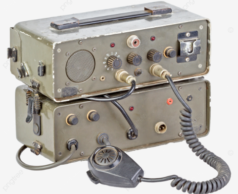

Primeros Pasos en la Radioafición: Tu Primera Estación
Iniciar en la radioafición es una aventura emocionante. El primer paso es obtener tu licencia, lo que te abrirá las puertas a un mundo de comunicación global. Luego, necesitarás tu primer equipo: un transceptor de HF o VHF/UHF y una antena sencilla pueden ser suficientes para empezar a hacer tus primeros contactos (QSOs).
 Leer más...